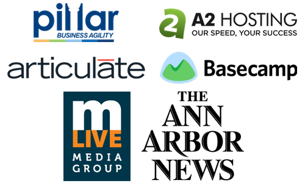

Tech 101
#GDIA2TECH101
Welcome!
Girl Develop It is here to empower and assist women interested in getting into and advancing in the tech industry through affordable and accessible programs.
Some "rules"
- We are here for you!
- Every question is important.
- Help each other.
- Have fun!
Upcoming Events
Intro to WordPress2-Night Workshop
Mon. 8/25 & Wed. 8/27 @ Pillar
6pm - 9pm | 1327 Jones Dr.
Upcoming Events
$: echo "hello, command line"
#an introduction
Tuesday 9/9 @ Atomic Object
6:30pm | 206 S. Fifth Ave #200
Upcoming Events
Lightening Talks
JavaScript
Wednesday 9/17 @ The Forge by Pillar
6:30pm | 1327 Jones Dr.
Upcoming Events
Getting Sassy With CSS
A Sass Workshop
Tues. 9/23 & Thur. 9/25 @ Nutshell
6:00pm | 212 S. 5th Ave
Community Events
- A2 Ruby Brigade - Component Based Architecture
Tuesday 8/26 @ Atomic Object - WordPress A2 - Lessons Learned Launching a Premium Plugin
Wednesday 8/27 @ Room 2001 LSA Building - GDG A3 - Android TV
Thursday 8/28 @ Arbormoon - Craftsman Guild - Docker
Tuesday 9/2 @ Atomic Object - AACS - Patentability of Software
Wednesday 9/3 @ Atomic Object
- Mobile Monday - Wearable Platforms
Wednesday 9/3 @ SPARK - SEM.js - Assemble.io
Monday 9/8 @ Nutshell - GDI Detroit - Intro to OOCSS
Wednesday 9/10 @ AO Detroit - Duo Tech Talks - Modern Security Eng. Organizations
Friday 9/12 @ Duo Security - A2 New Tech - Monthly Meetup
Tuesday 9/16 @ Law School, South Hall, Room 1225 - Plus soooo many more we couldn't fit here...
Sponsors!
Tech 101
#GDIA2TECH101
About Us
-
Ronda Bergman
- GDI-AA Co-Leader, Software Engineer @Terumo
- Experience
-
Vera Reynolds
- Software Journeyman @Pillar
- Experience
What We'll Cover
-
Terms & technologies
- Acronyms, the world wide web, languages/libraries/frameworks
-
Building a web site
- Considerations, UX & IA, tools
-
Web development professionals
- Team structure, becoming one
What to Expect
- This is a survey of a very broad topic
- Get a sense of what you'd like to know more about
- I don't know everything, and neither will you
- Have fun! (and ask questions)
What Does a Web Page Actually Look Like?
Terms & Technologies
Terms
HTML: Hyper Text Markup Language - The code structure used to convey the content of a web site
CSS: Cascading Style Sheets - A language used to describe the presentation of the content
WYSIWYG: What You See Is What You Get - A type of editing software meant to be used by those who don't know how to code
Terms
IDE: Integrated Development Environment - Software meant to support the entire development process, often including compilation for a server-side language
CMS: Content Management System - A program that allows publishing, editing, and modifying content as well as maintenance from a central interface
Open source: A program in which the source code is available to the general public for use and/or modification from its original design
Terms
API: Application Programming Interface - An easy-to-use interface or set of tools made available to access a complex application
IP Address: Internet Protocol Address - A unique address for a computer or a server. Some IP Addresses are only unique to the network they are on while others are completely unique
DNS: Domain Name Service - A directory that associates domain names with host IPs to allow users to connect to web sites via URLs
Terms
SEO: Search Engine Optimization - The process of increasing your web site's perceived value to search engine algorithms, raising its rank in search results
Web 2.0: Buzzword generally describing a trend towards interactivity, rich media, and social engagement in web design
The Cloud: Services and technology that offer remote storage, processing, or other functionality by way of the internet
What is the World Wide Web?

Home and Daily Life of a Web Site
A typical web site will live or is "hosted" on a web server. Web servers are often large computers connected to a network.
- Type a web site address (URL) into the address bar
- DNS connects you to the hosting server
- The files are then sent back to your computer for display
- Sometimes code must be compiled before being sent back to you.
Clients vs. Servers
Clients make requests, servers fulfill them (usually).
For our web discussions, client = browser, but search engine crawlers, command line interfaces, and other applications can also behave as clients.
While any type of computer can be used as a server, they are generally larger and more powerful than others.
Parsing Languages & Media
Client-side:
- HTML
- CSS
- JavaScript
- Flash (with plugin)
- Images
Sever-side:
- PHP
- Perl
- Python
- Ruby
- .Net
- Java
- ColdFusion
- Databases
Not Languages
-
Libraries are collections of programming shortcuts for a language
- jQuery, Prototype, & Mootools
-
Frameworks may include libraries, software, and more. Basically, a collection of assets/tools that helps you work in a particular language, usually from scratch
- Rails, Cake
-
A specification is a set of currently acceptable rules for a given language
- HTML5 expands on the HTML4 spec and deprecates some older HTML syntax
Not Languages
- AJAX is none of these, but is a technique combining multiple languages to return results from the server without needing to refresh a page. It stands for Asynchronous JavaScript And XML.
Java != JavaScript
Java:
- Server-side
- Object-oriented
- Requires special parser (JVM)
- By Sun Microsystems
JavaScript:
- Primarily client-side
- Primarily written procedurally
- Parsed by any browser
- By Netscape
Web Standards
In general, this means a site should:
- Have valid HTML, CSS, and JavaScript
- Meet accessibility standards
- Meet semantic guidelines
- Have valid meta data
- Have proper character encoding
Responsive Design
- Laptop, ipad, ipad mini, smartphone...
- Goal = easy viewing/interacting experience across devices
- Fluid layout
- Selective features
Building a Web Site
Considerations Before Building
- What is the purpose of the site?
- Know your audience
-
Hosting and a domain name
- Domain name registration should cost about $20/yr
- Hosting should cost around $75/yr
- Hosting choices may depend on supported server-side tech
- Whether to build it yourself or hire someone
User Experience & Information Architecture
A user-friendly, well-architected site will:
- Deepen engagement
- Increase conversion
- Raise satisfaction
- Bring users back
Sitemaps & Decision Trees


What Languages to Use
That depends...
- HTML and CSS will almost certainly be used
- JavaScript may be used for interactivity
- Server-side languages will likely be used for any data storage or retrieval
Server-side Languages: What are the Differences?
- The main difference is syntax
- The set of rules that define the combinations of symbols that are considered to be correctly structured programs in that language
- They have slightly different strengths and philosophies
-
Which you choose to use will depend on
- What you are familiar with or want to learn
- What your host supports
- Community and documentation
Hello World
PHP
echo "Hello, world!";
Java
class HelloWorld {
static public void main( String args[] ) {
System.out.println( "Hello World!" );
}
}
Hello World
Python
'Hello, world!'
Ruby
puts 'Hello, world!'
Hello World
JavaScript
Not server-side, but just for example
document.writeln('Hello, World!');
Tools of the Trade
To build your web site, you will probably need:
- A simple text editor or code editor such as SublimeText, Notepad++, or TextWrangler to write your code. Many can be found for free.
- A web browser such as Chrome, Firefox, or Safari to test your code. All popular modern browsers are free.
Tools of the Trade - Browsers
.svg.png)
Tools of the Trade
You will also need:
- An FTP (file transfer protocol) client such as WinSCP, Cyberduck, or CoffeeCup FTP to get files from your computer to the server. Many are free.
- Optionally, an image editor such as IrfanView, Gimp, or Photoshop to edit images which will be used on the web site. Some are available for free.
Web Development Professionals
Meet the Web Team
-
Front end
- User Experience Designer
- Graphic Designer
- Web Developer
-
Back end
- Server Admin
- Database Admin
- Software Engineer
-
Overall
- QA Engineer
- Project Manager
How to Become a Developer
- Degrees and certifications: they don't hurt
- Be curious, a problem solver, and intrepid
- Build things. For yourself, if no one will pay you
- Through all of this, learn your craft and how things work